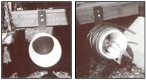

Here's a handy contraption designed by John Gurzo of Farmingdale, New Jersey. It's a garden-hose hanger-complete with space for storing a sprinkler attachment?made from a plastic bucket, an assortment of bolts, a 10 " X 20 " piece of 1/2 " plywood, and a scrap of 2 X 4.
John used a clean, empty five-gallon container (it had once held joint compound) ... cut two 10"-diameter circles from the plywood and-after placing one disk inside and one outside the bottom of the pail?clamped them together with four 1-1/2" bolts ... mounted the reinforced bucket to one end of a 24 " length of 2 X 4, using two 1/4" X 4" bolts (see photo) ... and then attached the free end of the 2 X 4 to the side of his porch with two more 1/4 " X 4 " bolts.
It was surely simple to build, and it looks pretty darned effective!
|
PHOTOS BY J. GURZO |
 |
|